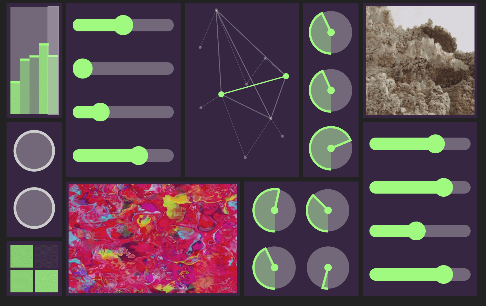
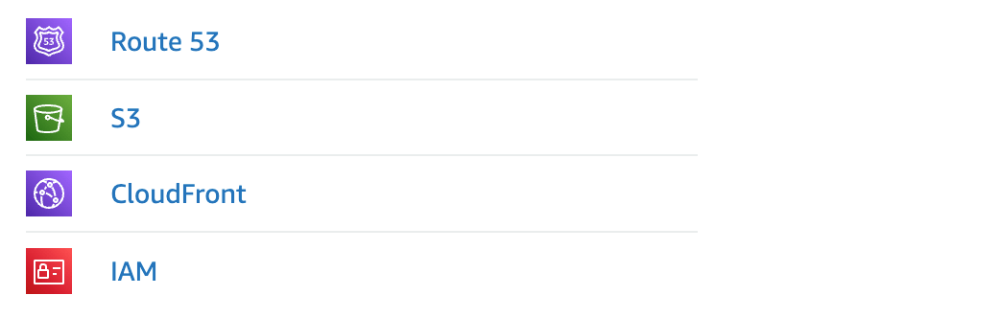

Commission / Audio systems
Parallels 03
An interactive audio experience for Vancouver New Music, shaped by musicians, writers, and visual artists.

Project overview
I was contracted to help with this project by Vancouver New Music, an organization promoting new musical works based in Vancouver. The idea was to explore a fully-remote collaborative process and produce an interactive online experience, as well as an album.
Raven Chacon (now Pulitzer prize-winning composer) and John Dieterich (of the fantastic group Deerhoof, among many other projects) led the collaboration from a musical perspective. Also involved were various instrumentalists, writers, and visual artists. Read more about the project here.
Tools Typescript, Tone JS, Nexus UI Elements, Amazon Web Services
Asynchronous Collaboration

- I led the group through a few sessions of brainstorming and whiteboarding, in order to get a better idea of the goals and expectations. The leaders of the project and I also met a few times to touch base and get onto the same page.
- Other than that, all collaboration was asynchronous - I sent sketches and ideas out to the participants to discuss and iterate on. They sent me their writings, audio clips, and images, and we slowly reached a consensus of how all this was going to look.
- The group wanted it to be something that would encourage experimentation, and be somewhat chaotic and inscrutable, yet mesmerizing.
Interaction Design

- This project was a blast for me because everyone was so intensely creative - the kinds of people that I feel an affinity for, having a background in art and music. I learned that one of my core skills is straddling that line between imaginative creativity and more technical engineering concerns, and communicating between people in both camps.
- Through the collaborative process, I realized that the end product was going to be quite different from most of the websites and web development I'd worked on previously.
- Designing this experience was interesting because no one had a set idea of the end product beforehand. Instead, the group had a lot of ideas for how the experience would make someone feel, what the sensations would be, and I worked backwards from that to the final idea.
- I came up with the idea of a big, opaque "wall" of controls - each control actually affecting some parameter of the audio - for example, pitch, or filter frequency. The controls would pop in and out, changing over time.
- The geometric animal shapes were an asset we knew we wanted to be central. Each one represents a different "room" of sound - with different audio clips, effects, and different types of controls available. The user gets an impression that they're blindly navigating through a labyrinth of strange rooms.
Web Audio

- For audio processing, I used the incredible Tone JS library. It has a rich set of features for effects, synthesis, and playback.
- The library allows you set up everything as a network of nodes, with audio flowing through them, effects or transformations being applied in each node.
- As a UI control first renders, it is assigned to a random parameter of an effect that's in the current space, which is handled within a React Hook by a custom pub/sub system that I wrote.
Amazon Web Services

- I opted to use Amazon Web Services for the infrastructure and hosting of the project. Admittedly there wasn't much going on on the backend, so "infrastructure" is a pompous word, but I wanted to use this project to learn more about AWS.
- The static build files all live in S3, and I used CloudFront as the CDN and Route 53 to set up the dns routing.
- The biggest hurdle of using AWS was understanding how permissions and roles work - I would constantly run into problems where I had unknowingly left something inaccessible, or where a service didn't have the proper permissions. I still haven't mastered this but I appreciate the idea that everything is locked down by default, and permissions must be explicitly given for a very specific context.